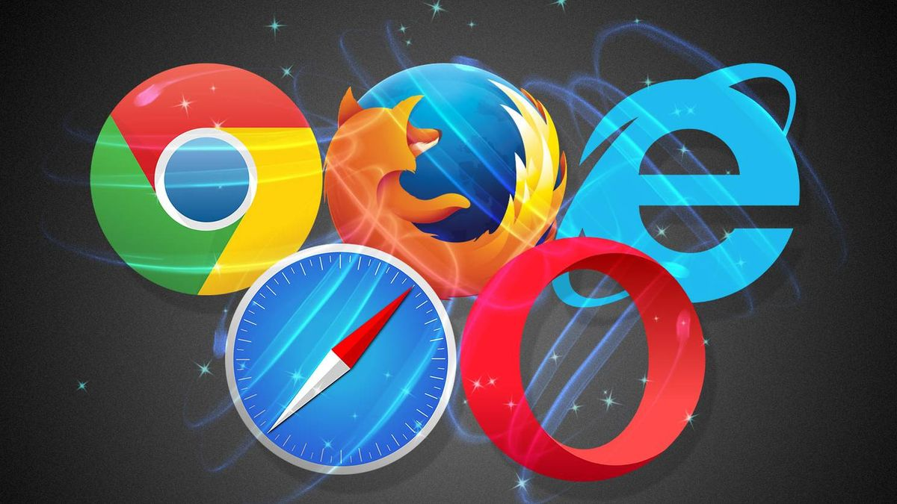

The Blog
Tips, guides and insights on web design, branding, social media and digital marketing.

Why Every Business Needs a Website in 2026
In a world where customers Google before they buy, your website is your most important salesperson. Here's why a professional site is non-negotiable.
Best Social Media Marketing Tips for Small Businesses
You don't need a massive budget to win on social media. These proven strategies will help any small business build a genuine, engaged following.

How Great Design Builds Unshakeable Brand Trust
Design is not decoration — it's communication. Discover how investing in visual identity directly impacts customer perception and sales.
Meta vs Google Ads: Which is Right for Your Business?
Both platforms are powerful, but they work differently. We break down when to use each — and how to get maximum ROI from your ad spend.

5 Signs Your Business Is Ready to Invest in Digital Marketing
Not sure if you're ready? These five signals indicate it's time to invest in a professional digital presence and stop leaving money on the table.
The 2026 Digital Agency Guide: What to Expect & Ask
Choosing a digital agency is a big decision. Here's exactly what to look for, what questions to ask, and what red flags to avoid.